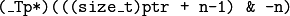
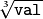
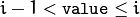
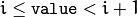

Utility and System Functions and Macros¶
alignPtr¶
Aligns a pointer to the specified number of bytes.
-
C++:
alignPtr(_Tp* ptr, int n=sizeof(_Tp))¶ Parameters: - ptr – Aligned pointer.
- n – Alignment size that must be a power of two.
The function returns the aligned pointer of the same type as the input pointer:

alignSize¶
Aligns a buffer size to the specified number of bytes.
-
C++:
alignSize(size_t sz, int n)¶ Parameters: - sz – Buffer size to align.
- n – Alignment size that must be a power of two.
The function returns the minimum number that is greater than or equal to sz and is divisible by n :
allocate¶
Allocates an array of elements.
-
C++:
allocate(size_t n)¶ Parameters: - n – Number of elements to allocate.
The generic function allocate allocates a buffer for the specified number of elements. For each element, the default constructor is called.
deallocate¶
Deallocates an array of elements.
-
C++:
deallocate(_Tp* ptr, size_t n)¶ Parameters: - ptr – Pointer to the deallocated buffer.
- n – Number of elements in the buffer.
The generic function deallocate deallocates the buffer allocated with
allocate() . The number of elements must match the number passed to
allocate() .
fastAtan2¶
Calculates the angle of a 2D vector in degrees.
-
C++:
fastAtan2(float y, float x)¶
-
Python:
cv2.fastAtan2(y, x) → retval¶
-
C:
cvFastArctan(float y, float x)¶
-
Python:
cv.FastArctan(y, x) → float¶ Parameters: - x – x-coordinate of the vector.
- y – y-coordinate of the vector.
The function fastAtan2 calculates the full-range angle of an input 2D vector. The angle is measured in degrees and varies from 0 to 360 degrees. The accuracy is about 0.3 degrees.
cubeRoot¶
Computes the cube root of an argument.
-
C++:
cubeRoot(float val)¶
-
Python:
cv2.cubeRoot(val) → retval¶
-
C:
cvCbrt(float value)¶
-
Python:
cv.Cbrt(value) → float¶ Parameters: val – A function argument.
The function cubeRoot computes . Negative arguments are handled correctly. NaN and Inf are not handled. The accuracy approaches the maximum possible accuracy for single-precision data.
Ceil¶
Rounds floating-point number to the nearest integer not smaller than the original.
-
C:
cvCeil(double value)¶
-
Python:
cv.Ceil(value) → int¶ Parameters: value – floating-point number. If the value is outside of INT_MIN...INT_MAXrange, the result is not defined.
The function computes an integer i such that:

Floor¶
Rounds floating-point number to the nearest integer not larger than the original.
-
C:
cvFloor(double value)¶
-
Python:
cv.Floor(value) → int¶ Parameters: value – floating-point number. If the value is outside of INT_MIN...INT_MAXrange, the result is not defined.
The function computes an integer i such that:

Round¶
Rounds floating-point number to the nearest integer
-
C:
cvRound(double value)¶
-
Python:
cv.Round(value) → int¶ Parameters: value – floating-point number. If the value is outside of INT_MIN...INT_MAXrange, the result is not defined.
IsInf¶
Determines if the argument is Infinity.
-
C:
cvIsInf(double value)¶
-
Python:
cv.IsInf(value) → int¶ Parameters: value – The input floating-point value
The function returns 1 if the argument is a plus or minus infinity (as defined by IEEE754 standard) and 0 otherwise.
IsNaN¶
Determines if the argument is Not A Number.
-
C:
cvIsNaN(double value)¶
-
Python:
cv.IsNaN(value) → int¶ Parameters: value – The input floating-point value
The function returns 1 if the argument is Not A Number (as defined by IEEE754 standard), 0 otherwise.
CV_Assert¶
Checks a condition at runtime and throws exception if it fails
-
C++:
CV_Assert(expr None)¶ Parameters: - expr – Expression for check.
The macros CV_Assert (and CV_DbgAssert) evaluate the specified expression. If it is 0, the macros raise an error (see error() ). The macro CV_Assert checks the condition in both Debug and Release configurations while CV_DbgAssert is only retained in the Debug configuration.
error¶
Signals an error and raises an exception.
-
C++:
error(const Exception& exc)¶
-
C:
cvError(int status, const char* func_name, const char* err_msg, const char* file_name, int line)¶ Parameters: - exc – Exception to throw.
- status – Error code. Normally, it is a negative value. The list of pre-defined error codes can be found in
cxerror.h. - func_name – The function name where error occurs.
- err_msg – Text of the error message.
- file_name – The file name where error occurs.
- line – The line number where error occurs.
- args –
printf-like formatted error message in parentheses.
The function and the helper macros CV_Error and CV_Error_:
#define CV_Error( code, msg ) error(...)
#define CV_Error_( code, args ) error(...)
call the error handler. Currently, the error handler prints the error code ( exc.code ), the context ( exc.file,``exc.line`` ), and the error message exc.err to the standard error stream stderr . In the Debug configuration, it then provokes memory access violation, so that the execution stack and all the parameters can be analyzed by the debugger. In the Release configuration, the exception exc is thrown.
The macro CV_Error_ can be used to construct an error message on-fly to include some dynamic information, for example:
// note the extra parentheses around the formatted text message
CV_Error_(CV_StsOutOfRange,
("the matrix element (
i, j, mtx.at<float>(i,j)))
Exception¶
-
class
Exception: publicstd::exception¶
Exception class passed to an error.
class Exception
{
public:
// various constructors and the copy operation
Exception() { code = 0; line = 0; }
Exception(int _code, const string& _err,
const string& _func, const string& _file, int _line);
Exception(const Exception& exc);
Exception& operator = (const Exception& exc);
// the error code
int code;
// the error text message
string err;
// function name where the error happened
string func;
// the source file name where the error happened
string file;
// the source file line where the error happened
int line;
};
The class Exception encapsulates all or almost all necessary information about the error happened in the program. The exception is usually constructed and thrown implicitly via CV_Error and CV_Error_ macros. See
error() .
fastMalloc¶
Allocates an aligned memory buffer.
-
C++:
fastMalloc(size_t bufSize)¶
-
C:
cvAlloc(size_t size)¶ Parameters: - size – Allocated buffer size.
- bufSize – Allocated buffer size.
The function allocates the buffer of the specified size and returns it. When the buffer size is 16 bytes or more, the returned buffer is aligned to 16 bytes.
fastFree¶
Deallocates a memory buffer.
-
C++:
fastFree(void* ptr)¶
-
C:
cvFree(void** pptr)¶ Parameters: - ptr – Pointer to the allocated buffer.
- pptr – Double pointer to the allocated buffer
The function deallocates the buffer allocated with fastMalloc() . If NULL pointer is passed, the function does nothing. C version of the function clears the pointer *pptr to avoid problems with double memory deallocation.
format¶
Returns a text string formatted using the printf-like expression.
-
C++:
format(const char* fmt, ...)¶ Parameters: - fmt –
printf-compatible formatting specifiers.
- fmt –
The function acts like sprintf but forms and returns an STL string. It can be used to form an error message in the
Exception constructor.
getBuildInformation¶
Returns full configuration time cmake output.
-
C++:
getBuildInformation()¶
Returned value is raw cmake output including version control system revision, compiler version, compiler flags, enabled modules and third party libraries, etc. Output format depends on target architecture.
checkHardwareSupport¶
Returns true if the specified feature is supported by the host hardware.
-
C++:
checkHardwareSupport(int feature)¶
-
C:
cvCheckHardwareSupport(int feature)¶
-
Python:
cv2.checkHardwareSupport(feature) → retval¶ Parameters: feature – The feature of interest, one of:
CV_CPU_MMX- MMXCV_CPU_SSE- SSECV_CPU_SSE2- SSE 2CV_CPU_SSE3- SSE 3CV_CPU_SSSE3- SSSE 3CV_CPU_SSE4_1- SSE 4.1CV_CPU_SSE4_2- SSE 4.2CV_CPU_POPCNT- POPCOUNTCV_CPU_AVX- AVXCV_CPU_AVX2- AVX2
The function returns true if the host hardware supports the specified feature. When user calls setUseOptimized(false), the subsequent calls to checkHardwareSupport() will return false until setUseOptimized(true) is called. This way user can dynamically switch on and off the optimized code in OpenCV.
getNumberOfCPUs¶
Returns the number of logical CPUs available for the process.
-
C++:
getNumberOfCPUs()¶
getNumThreads¶
Returns the number of threads used by OpenCV for parallel regions. Always returns 1 if OpenCV is built without threading support.
-
C++:
getNumThreads()¶
The exact meaning of return value depends on the threading framework used by OpenCV library:
- TBB – The number of threads, that OpenCV will try to use for parallel regions. If there is any
tbb::thread_scheduler_initin user code conflicting with OpenCV, then function returns default number of threads used by TBB library.- OpenMP – An upper bound on the number of threads that could be used to form a new team.
- Concurrency – The number of threads, that OpenCV will try to use for parallel regions.
- GCD – Unsupported; returns the GCD thread pool limit (512) for compatibility.
- C= – The number of threads, that OpenCV will try to use for parallel regions, if before called
setNumThreadswiththreads > 0, otherwise returns the number of logical CPUs, available for the process.
See also
getThreadNum¶
Returns the index of the currently executed thread within the current parallel region. Always returns 0 if called outside of parallel region.
-
C++:
getThreadNum()¶
The exact meaning of the return value depends on the threading framework used by OpenCV library:
- TBB – Unsupported with current 4.1 TBB release. May be will be supported in future.
- OpenMP – The thread number, within the current team, of the calling thread.
- Concurrency – An ID for the virtual processor that the current context is executing on (0 for master thread and unique number for others, but not necessary 1,2,3,...).
- GCD – System calling thread’s ID. Never returns 0 inside parallel region.
- C= – The index of the current parallel task.
See also
getTickCount¶
Returns the number of ticks.
-
C++:
getTickCount()¶
-
Python:
cv2.getTickCount() → retval¶
The function returns the number of ticks after the certain event (for example, when the machine was turned on).
It can be used to initialize
RNG() or to measure a function execution time by reading the tick count before and after the function call. See also the tick frequency.
getTickFrequency¶
Returns the number of ticks per second.
-
C++:
getTickFrequency()¶
-
Python:
cv2.getTickFrequency() → retval¶
The function returns the number of ticks per second. That is, the following code computes the execution time in seconds:
double t = (double)getTickCount();
// do something ...
t = ((double)getTickCount() - t)/getTickFrequency();
getCPUTickCount¶
Returns the number of CPU ticks.
-
C++:
getCPUTickCount()¶
-
Python:
cv2.getCPUTickCount() → retval¶
The function returns the current number of CPU ticks on some architectures (such as x86, x64, PowerPC). On other platforms the function is equivalent to getTickCount. It can also be used for very accurate time measurements, as well as for RNG initialization. Note that in case of multi-CPU systems a thread, from which getCPUTickCount is called, can be suspended and resumed at another CPU with its own counter. So, theoretically (and practically) the subsequent calls to the function do not necessary return the monotonously increasing values. Also, since a modern CPU varies the CPU frequency depending on the load, the number of CPU clocks spent in some code cannot be directly converted to time units. Therefore, getTickCount is generally a preferable solution for measuring execution time.
saturate_cast¶
Template function for accurate conversion from one primitive type to another.
-
C++:
saturate_cast(_Tp2 v)¶ Parameters: - v – Function parameter.
The functions saturate_cast resemble the standard C++ cast operations, such as static_cast<T>() and others. They perform an efficient and accurate conversion from one primitive type to another (see the introduction chapter). saturate in the name means that when the input value v is out of the range of the target type, the result is not formed just by taking low bits of the input, but instead the value is clipped. For example:
uchar a = saturate_cast<uchar>(-100); // a = 0 (UCHAR_MIN)
short b = saturate_cast<short>(33333.33333); // b = 32767 (SHRT_MAX)
Such clipping is done when the target type is unsigned char , signed char , unsigned short or signed short . For 32-bit integers, no clipping is done.
When the parameter is a floating-point value and the target type is an integer (8-, 16- or 32-bit), the floating-point value is first rounded to the nearest integer and then clipped if needed (when the target type is 8- or 16-bit).
This operation is used in the simplest or most complex image processing functions in OpenCV.
See also
setNumThreads¶
OpenCV will try to set the number of threads for the next parallel region.
If threads == 0, OpenCV will disable threading optimizations and run all its
functions sequentially. Passing threads < 0 will reset threads number to system default.
This function must be called outside of parallel region.
-
C++:
setNumThreads(int nthreads)¶ Parameters: - nthreads – Number of threads used by OpenCV.
OpenCV will try to run its functions with specified threads number, but some behaviour differs from framework:
- TBB – User-defined parallel constructions will run with the same threads number, if another is not specified. If late on user creates his own scheduler, OpenCV will be use it.
- OpenMP – No special defined behaviour.
- Concurrency – If
threads == 1, OpenCV will disable threading optimizations and run its functions sequentially.- GCD – Supports only values <= 0.
- C= – No special defined behaviour.
See also
setUseOptimized¶
Enables or disables the optimized code.
-
C++:
cvUseOptimized(int on_off)¶
-
Python:
cv2.setUseOptimized(onoff) → None¶
-
C:
cvUseOptimized(int on_off) Parameters: - on_off – The boolean flag specifying whether the optimized code should be used (
on_off=true) or not (on_off=false).
- on_off – The boolean flag specifying whether the optimized code should be used (
The function can be used to dynamically turn on and off optimized code (code that uses SSE2, AVX, and other instructions on the platforms that support it). It sets a global flag that is further checked by OpenCV functions. Since the flag is not checked in the inner OpenCV loops, it is only safe to call the function on the very top level in your application where you can be sure that no other OpenCV function is currently executed.
By default, the optimized code is enabled unless you disable it in CMake. The current status can be retrieved using useOptimized.
Help and Feedback
You did not find what you were looking for?- Ask a question on the Q&A forum.
- If you think something is missing or wrong in the documentation, please file a bug report.

Table Of Contents
- Utility and System Functions and Macros
- alignPtr
- alignSize
- allocate
- deallocate
- fastAtan2
- cubeRoot
- Ceil
- Floor
- Round
- IsInf
- IsNaN
- CV_Assert
- error
- Exception
- fastMalloc
- fastFree
- format
- getBuildInformation
- checkHardwareSupport
- getNumberOfCPUs
- getNumThreads
- getThreadNum
- getTickCount
- getTickFrequency
- getCPUTickCount
- saturate_cast
- setNumThreads
- setUseOptimized
- useOptimized